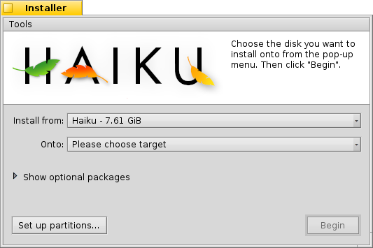

中文 ［中文］
中文 ［中文］ Català
Català Deutsch
Deutsch English
English Español
Español Français
Français Italiano
Italiano Magyar
Magyar Polski
Polski Português
Português Português (Brazil)
Português (Brazil) Română
Română Slovenčina
Slovenčina Suomi
Suomi Svenska
Svenska Русский
Русский Українська
Українська 日本語
日本語 安装器
安装器
| 桌面栏: | ||
| 位置: | /boot/system/apps/Installer | |
| 设置: | none |
安装器用于将 Haiku 拷贝到其他的磁卷。
在开始拷贝之前，会弹出一个显示重要信息的开始窗口。它不是毫无意义的你可以忽略的最终用户许可协议（EULA），它包括了如下的声明：
这是测试质量的软件。一定要做好备份，否则要遭受无法预计的后果。
安装器需要一个预备的分区。在 Haiku 的 DriveSetup 足够成熟之前，您可能需要使用 GParted LiveCD 或者一个类似的工具来处理分区任务。
- Haiku可以手动添加到 GRUB 启动管理器。具体的操作方法，请查阅 在线手册。
如果您确认了，则会出现如下的主窗口：
第一个弹出菜单中用于选择执行安装的源文件。它可以是已经安装的Haiku或者是一个安装用的CD光盘或者USB磁盘等。
第二个弹出菜单用于确定安装的目标。目标分区或磁卷的数据将会被完全覆盖，因此之前就要使用分区工具将这些分区分出来，例如Gparted.
点击小的展开空间Show Optional Packages，如果它可以使用，您就可以选择安装到基本的Haiku中。
在开始安装进程之前，你应该检查一下是否选择了正确的目标。点击，打开 驱动安装器 ，然后查看可用的磁卷和分区的命名和层次结构。
点击 启动安装进程。它将会把除了 /home/ 和 /sysem/ 文件夹之外的所有文件拷贝到目标磁卷中，使它变成可引导的分区。
 工具
工具
在安装进程的结尾，目标分区会自动的设置为可启动分区。然而，也有可能发生一些情况，其他的操作系统或者分区工具覆盖了您的Haiku磁卷的引导扇区。遇到这种情况，从您的安装光盘启动，然后打开安装器 。在 菜单中选择您的Haiku启动分区，然后从 菜单中选择 来恢复分区的可引导扇区。
在 菜单中的另一个项目是 ，它用于在启动扇区中建立一个菜单来选择启动的操作系统。更多信息参见主题 启动管理器 。
如果您已经使用了 GRUB 之类的启动管理器或者Haiku 是机器上唯一的操作系统，就不需要运行 启动管理器 ，对于前者您只能手动的在启动管理器中添加 Haiku 启动项（参看上文）。